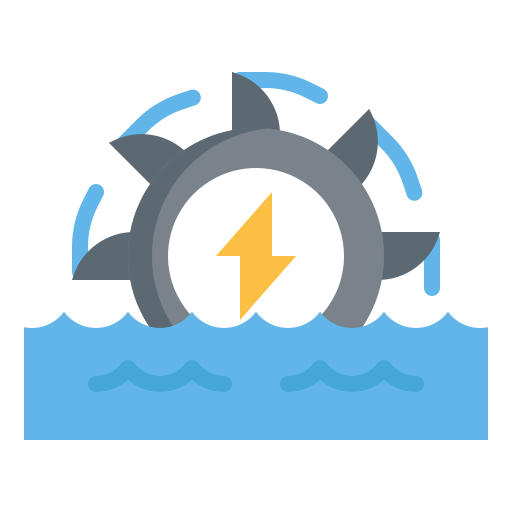

Perfil Profesional.
Ingeniera civil especialista en estructuras, con seis años de experiencia en estudios y diseños de centrales hidroeléctricas relacionados con la identificación de potencial hidroeléctrico para el desarrollo de proyectos a filo de agua y tipo pie de presa; la definición general y optimización de los esquemas de aprovechamiento en etapas de identificación, prefactibilidad y factibilidad y la ejecución de diseños de las obras de conducción, las obras de derivación y las obras civiles para generación.

Proyectos hidroeléctricos:
- Identificación y optimización de proyectos hidroeléctricos
- Diseño de obras de conducción, derivación y casa de máquinas
- Análisis de hidráulica transitoria

Hidráulica transitoria:
- Centrales hidroeléctricas de alta caída
- Sistemas de bombeo
- Redes de distribución de agua potable